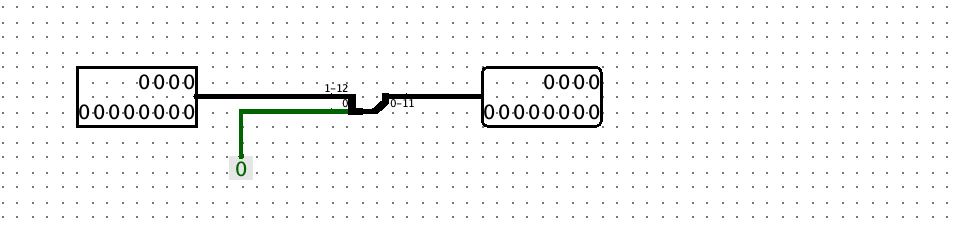

Dit verslag werd opgesteld door:
De oplossing bestaat uit de volgende bestanden (geef alle bestanden op):
Geef een gestructureerd verslag van de oplossing. Gebruik figuren (bijvoorbeeld screenshots) waar je denkt dat ze een bijdrage leveren. Gebruik eventueel subtitels om structuur te brengen. Zorg ervoor dat alle onderdelen van de opgave klaar en duidelijk besproken worden. Verduidelijk hoe je tot de oplossing bent gekomen.
We hebben een Arithmetic Logic Unit (ALU) ontworpen voor 12-bit two's complement data words.
De ALU zal geprogrammeerd zijn om een reeks van 16 verschillende bewerkingen uit te voeren, een 4-bit code als input zal bepalen welke operate er zal worden geselecteerd. We moeten hier ook bij vermelden dat indien er overflow optreedt bij de geselecteerde operatie, we dit ook zullen moeten aangeven in ons eindresultaat. Dit kan worden gezien als een indicator die de uitvoer van de operatei nog eens controleert. Om onze ALU te bouwen maken we enkel gebruik van de ingebouwde libraries van Logisim nl. Wiring, Gates en Plexers. We zullen ook gebruikmaken van onze zelfgemaakte 12-bit Carry Lokahead Adder (CLA).
We zullen beginnen met een algemene bespreking van de ALU en vervolgens dieper ingaan op elk component.
Aan de linkerzijde bevinden zich de twee 12-bit invoeren die gemerkt worden als 'a' en 'b'.De bovenste sectie ontvangt de selectie-input van onze ALU, die aanduidt welke operatie moet worden uitgevoerd. Deze waarde is verbonden aan de twee multiplexers (twee indien er overflow van toepassing is bij de geselecteerde operatie) aan de rechter- en onderkant. De rechter multiplexer beheert de output van de juiste operatie, terwijl de onderste multiplexer ervoor zorgt dat de juiste overflow wordt genomen.
We structureren het verslag als volgt:
| Categorie | Operaties |
|---|---|
| Logic | Not, AND, OR |
| Numeric Calculations | Addition, Subtraction |
| Comparisons | Greater than, Less than, Equal, Not equal |
| Shifting | Shift left logical, Shift right logical, Shift left arithmetic, Shift right arithmetic |
| Andere | No operation, Numeric inverse, Generate Zero |
Het verslag zal voorzien worden van de nodige extra informatie indien dit nodig is.
Logic We beginnen onze bespreking met de simpele set logische operaties:Not:

AND:
OR:
Numeric Calculations De volgende sectie behandelt numerieke berekeningen, met name optellen en aftrekken. Het optelproces was eenvoudig omdat we gebruik konden maken van de 12-bit adder uit project 2. Echter, het aftrekken was uitdagender. Aangezien a - b gelijk is aan a + (-b), berekenen we eerst de negatieve waarde van b. Door de som te nemen van a en de negatieve waarde van b, verkrijgen we het resultaat van de aftrekking.
PS: Een overflow wordt gegenereerd wanneer er een overflow optreedt in zowel de negatieve waarde als de adder.
Addition:
Substraction:
Comparisons
De volgende opdracht omvat de vergelijkingsoperaties, waarbij de output 0 of 1 is. We passen deze logica toe met behulp van een multiplexer. 0 komt overeen met een positief getal of 'false' en 1 met een negatief getal of 'true'. Het enige wat nog rest is de gevallen waarin a gelijk is aan b. Daarom voegen we toe dat als a gelijk is aan b, we 0 teruggeven, en in andere gevallen geven we het resultaat terug van de eerdere multiplexer.Less than:
Greater than:
Voor het nut van de multiplexer beter te begrijpen, gebruiken we volgende tabel:
Op deze tabel is te zien dat we gebruik maken van het verschil van de absolute waardes van inputs a en b om zo na te gaan of a > b. Het gebruikte circuit voor de absolute waardes kan hier waargenomen worden:
We maken dus hier ook weer gebruik van de numeric inverse, deze wordt later in dit verslag nog besproken. Bondig gezegd zal de multiplexer de inverse input doorgeven als de input negatief is (en dus de meest significante bit is 1). Als dit niet het geval is dan zal de multiplexer de input doorgeven waar er geen bewerkingen op zijn uitgevoerd.
Nu we dit concept begrijpen kunnen we dieper ingaan op de gebruikte multiplexer bij het greater than circuit.
Deze multiplexer is cruciaal voor het Greater Than circuit. Want dit bepaalt wanneer a > b is en wanneer niet. De reden waarom we deze specifieke volgorde als invoer voor onze multiplexer hebben gekozen, is eenvoudig af te leiden uit de tabel die we eerder hebben weergegeven.
Als twee inputs identiek zijn, betekent dat elke i-de bit van a gelijk is aan de i-de bit van b. Dit gedrag kunnen we simuleren met een XNOR-gate. Vervolgens controleren we of de NXOR-operatie voor elke bit 1 wordt en breiden we de 1-bit output uit naar een 12-bit output. De "niet" operatie toegepast op de eerste bit van de output van de "gelijk aan" operatie resulteert in 'waar' als a en b niet gelijk zijn en 0 als ze wel gelijk zijn.
Equal:
Not equal:
Shifting
Er bestaan twee methoden om bits te verschuiven. De eerste methode houdt in dat de bits op logische wijze worden verschoven. Bij de SLL (Shift Left Logical) wordt een 0 toegevoegd aan de eerste bit en worden de bits van de eerste tot de twaalfde positie genomen. Bij de SRL (Shift Right Logical) wordt een 0 toegevoegd aan het einde.Shift left logical:
Shift right logical:
Een andere methode is de arithmetische verschuiving. Hierbij wordt er gedeeld of vermenigvuldigd met 2. We moeten bij de shift left arithmetic wel rekening houden met de overflow. Dit komt omdat er een tekenverandering kan plaatsvinden. We geven een voorbeeld ter illustratie: als we een positief getal bv. 0101 nemen en we voeren hier de operatie "shift left arithmetic" op dan is het nieuwe getal 1010. Er is dus een tekenverandering aangezien de meest significante bit (de meest linkse) van een 0 naar een 1 gaat. Dus dit zal in ons circuit een overflow moeten aangeven. Bij de shift right arithmetic zullen we ervoor zorgen dat het teken onthouden wordt en doorgegeven wordt aan het resultaat.Shift left arithmetic:
Shift right arithmetic:
AndereDe laatste compenent omvat de invert, no-operation en zero-operation.
no operation:

Numeric Inverse:
Hier hebben gebruik gemaakt van het handig "trucje" om een two's complement bit om te keren. We hebben dus eerst het signaal door een NOT gate laten gaan en vervolgens er 1 bit bij opgeteld.

Generate zero:

Alle bovengenoemde elementen vormen tezamen een Arithmetic Logic Unit (ALU).